Chapter 1 Logic and Digital System
Digital & Computer Systems
- 通过一系列离散输入和离散中间信息（如：门），生成一系列离散输出
- 数字电路：输出在限定范围内可取连续值
Types of Digital Systems
-
No state present(不存在状态): combinational logic system, output=Function(input) 组合逻辑电路
-
State present: 时序电路
-
state updated at discrete times -> synchronous sequential system 通常随系统时钟
-
state updated at any time -> asynchronous（异步） sequential systeam
-
state = Function(state,input)
-
output = Function(state) or Function(state,input)
-
e.g：digital computer: synchronous,组频 -
beyond：embedded systems（嵌入式系统）：计算机作为一种内部器件包含在其他产品之中- analog signal，need A-to-D(digital) and D-to-A
- analog signal- continuous voltage- sample（采样）- digital voltage - DAC - discrete voltage - signal conditioning - continuous voltage
Information representation
在数字系统中，值离散变化
-
- analog: continuous in value and time
-
digital: asynchronous异步: discrete in value,continuous in time; synchronous同步: discrete in value and time
-
高低电平

- 值得注意的是，在输入和输出中，高低电位接受范围不同，可以发现输入判定范围更大，即宽进严出，其目的是为了提高电路在噪音影响下正常表现的能力
- 同时，图中HIGH接受范围和LOW接受范围之间存在一段区域称为未定义的，或浮动的，若输出电平在该区间，那么其认定值将是随机的
- 噪音容限是指加到正常输入值上、且不会在电路的输出产生不可预料变化的最大外部噪音电压。
- 关门电平$V_{OFF}$ 指使输出电压刚好达到输出转折至额定电平值时的最高输入低电平电压
- 开门电平$V_{ON}$ 指使输出电压刚好达到输出转折跃迁至另一状态额定电平值时的最低输入高电平电压
- 低电平噪声容限：$V_{nL}=V_{OFF}-V_{oL}$
- 高电平噪声容限：$V_{nH}=V_{oH}-V_{ON}$
-
二进制抗干扰能力强
-
dynamic RAM: capacitor charge (电容)
-
K($2^{10}$)-M-G-T 每个相差$2^{10}$
-
- numeric：必须表达一定范围内数字，支持简单且普遍计算，和二进制数值本身有较大关联
- non-numeric binary codes: e.g.：color， 相对灵活，不需要适配普遍的运算法则，和二进制数值本身未必有关系
- 灵活性指保证编码映射关系唯一情况下都可以称为合法编码
-
'one hot' code 独热码: you can represent 4 elements in radix r=2 with n=4 digits:0001,0010,0100,1000,each digit represents specific element。 只有一位非零one cold code 独冷码与one hot对应- 好处：决定或改变状态机目前状态成本相对较低，易设计与检测非法行为
- 缺点：信息表示率较低，非法状态多有效状态少
-
以下两种表示0-9时对称数字互为反码
- Excess3 Code:余3码，即编码为数字加3，0011表示0，0100表示1 $\cdots$
- 3来自$\frac{16-10}{2}$，也就是8421码容量减去需要表示的数量（即0-9）再除2，因此这样十进制下能进位两个数在余三码下相加也能进位
- 但实际上，编码做运算多数情况下没有意义
- 8，4，-2，-1 Code：后两位分别代表-2，-1
-
Binary Coded Decimal（BCD）：use 8，4，2，1 code，but only represent 0-9
- example: 13 -> 0001 | 0011
- application: good for direct interaction to people,like elevator,air conditioner
- to correct the digit,subtract 10 by adding 6 modulo 16
eg:13-> 1101 +6 -> 10011 -> 0001 | 0011
-
用二进制为非数字元素编码（如字符串）,此时可能有编码未被用到，如下图的100
-
ASCII: 0 30,A 41,a 61 (in 16进制)
-
PARITY BIT Error-Detection Codes(奇偶检错码)：添加一位（n+1）：odd/even parity：使n+1位加起来一共有奇/偶个1，加在最左侧 -
ASCII码的传输差错检测与校正：接收方测到一个校验错误就立刻回送NAK（否认）控制字符；若没检测到错误，就回送ACK（承认）控制字符。发送端收到NAK就立刻重复发送
-
Gray Code：相邻状态只有一位码不一样，渐变过程时不会出现突然变化
-
Application: Optical Shaft Encoder，dark represents 0，white represents 1
-
如果传感器位置出现偏移，不在同一直线，用Gray Code 不会出现错误
Chapter 2 Combinational Logic Circuits
- 上侧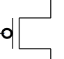 为PMOS管，常闭开关；下侧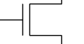为NMOS管，常开开关
CMOS：抗噪声性质好，低静态能耗，但生产过程复杂
组成：
特点：gs间电压高于阈值关闭，低于时打开
- 一种可以独自实现所有布尔函数的门类型叫做通用门，与非门和或非门都是通用门
- 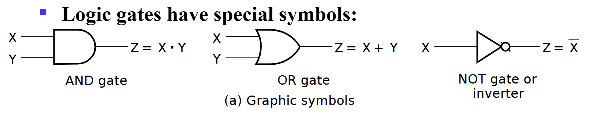
- Gate Delay:
- When input changes,the output change doesn't occur instantaneously.
- the delay between an input changes and the resulting output change is the gate delay denoted by $$ t_G $$ s
- Logic Diagrams and Expressions: Truth Table,Equation(逻辑函数),Diagram,波形图
- Boolean Algebra:
- $$ X(Y+Z)=XY+XZ $$
- $X+YZ=(X+Y)(X+Z)$
- Prf: $$ A=A\cdot A=A\cdot (A+C) \ A+BC=A(A+B+C)+BC=(A+B)(A+C) $$
- $\overline{X·Y}=\overline{X}+\overline{Y}$
- Absorption Theorem: $A+A·B=A,A+\overline{A}B=A+B$
- Consensus Law:
- $(A+B)(\overline{A}+C)(B+C)=(A+B)(\overline{A}+C)$
- $AB+\overline{A}C+BC=AB+\overline{A}C$
Hint： $BC=BC(A+\overline{A})$ -
$\overline{X}Z+X=(X+\overline{X})(Z+X)=Z+X$
Hint: $X+YZ=(X+Y)(X+Z)$ -
对偶（duality）式：把一个布尔等式中的所有与变或，或变与；若有0，1出现，则把1变0，0变1；等式两端同时进行对偶操作，等式仍然成立。
- 应用：求反函数时，可以先求对偶式，再将每一个字符求反
- 除非一个表达式是自对偶，否则求对偶后都会变化
-
Precedence:
-
Parentheses
- NOT
- AND
-
OR
-
Examples:
- 
$$ F=\overline{\overline{AC+\overline{A}BC}+\overline{B}C+AB\overline{C}} \ =(AC+\overline{A}BC)\overline{\overline{B}C}\cdot \overline{AB\overline{C}}\ =C(A+\overline{A}B)(B+\overline{C})(\overline{A}+\overline{B}+C) \ =C(A+\overline{A}B)(\overline{A}B+BC+\overline{A}\cdot\overline{C}+\overline{B}\cdot\overline{C}) \ =C(A+\overline{A}B)(\overline{A}B+BC) \ =ABC+\overline{A}BC=BC $$
Canonical Forms
- minterm & maxterms: maxterm is complemented(取反) with minterm;
- $\overline{m}_i=M_i,\overline{M}_i=m_i$
- $F=\sum{m_i}=\overline{\prod{M_i}},i=0,1,2,3,\dots,2^n-1$
- usage:turn logic function into numbers by minterm
Standard Forms
- SOP: an OR of AND terms,POS: an AND of OR terms
Gate Input Cost
文字成本：等式字符个数
- the number of inputs to the gates in the implementation corresponding exactly to the given equation or equations.
- G - inverters not counted
- GN - inverters counted
- For SOP and POS equations, it can be found from the equation(s) by finding the sum of:
- all literal appearances（Literal cost,L:公式中一共出现的变量个数，可重复）
- the number of terms excluding single literal terms,(G) and 除单个文字之外的全部项数
- optionally, the number of distinct complemented single literals (GN) 计算非门.
Karnaugh Maps
相邻的只有一位不同，Gray码顺序 三变量图可以理解为圈，即最左侧和最右侧相邻 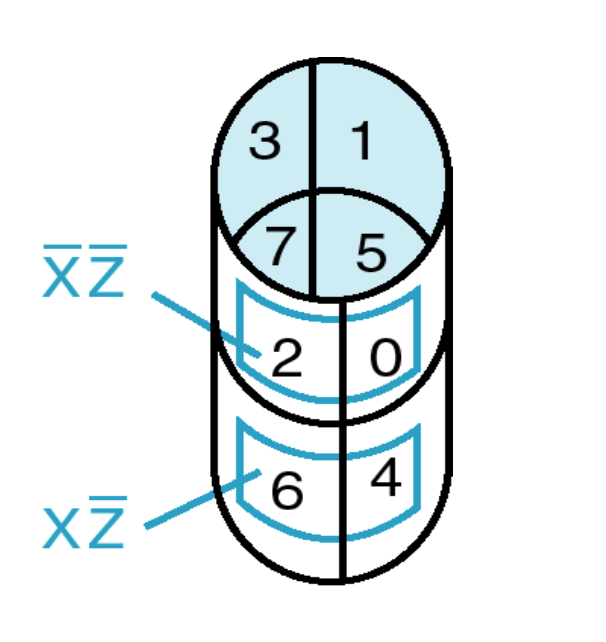
- 消除：Karnaugh图中有两个相邻小格子则可以删除一个变量
-
四变量：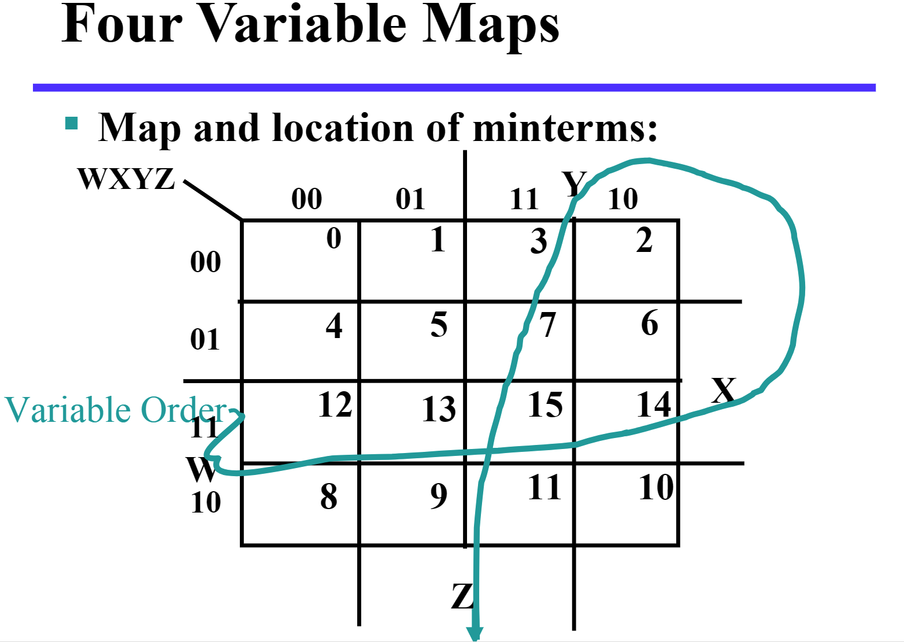
-
蕴含项 Implicant: map中的每⼀个格⼦, ⼀共$2^n$个. 质蕴含项 Prime Implicant: map中相邻的质蕴含项组成的长宽均为2的幂次的最⼤矩阵(⽐如1$\times$2, 2$\times$2, 1$\times$4). 质主蕴含项 Essential Prime Implicant: 包含仅包含在他之中的蕴含项的质蕴含项.(就是少了这个质蕴含项, 其他的 质蕴含项全⽤上也少了格⼦).
- 无关项$\times$：仅作为圈选矩阵时的桥梁，不需要考虑是否有遗漏
Buffer
仅作为放大器，放大输入信号后输出，同时可以提高电路运行速度，但有cost
- A buffer is a gate with the function F=X
- the same as a connection
- used to improve circuit voltage levels and increase the speed of circuit operation
- 例题：以下哪种情况需要buffer
ans：1不需要，否则cost超；2需要；3不相关，不能同时满足delay和cost的约束
- Constraints on cost and performance have a major role in making tradeoffs
NAND Gates
自然搭建速度最快的门
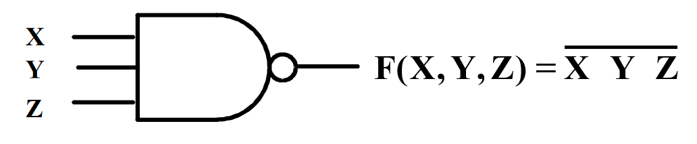
- This NAND symbol is called Invert-OR, since inputs are inverted and then ORed together.
- AND-Invert and Invert-OR both represent the NAND gate. Having both makes visualization of circuit function easier.
- NOR没有一个定义的数学符号，因为NOR操作是非关联的，难以数学描述
Exclusive OR/ Exclusive NOR
- The XOR function is: $X⊕Y=X\overline{Y}+\overline{X}Y$
- The eXclusive NOR (XNOR) function, otherwise known as equivalence is: $\overline{X⊕Y}=XY+\overline{XY} $
- $X⊕\overline{Y}= \overline{X⊕Y}$
- $X⊕Y⊕Z=X⊕(Y⊕Z)$
Odd and Even Functions
- The 1s of an odd function correspond to minterms having an index with an odd number of 1s.
- The 1s of an even function correspond to minterms having an index with an even number of 1s.
- 奇函数取非即为偶函数
异或与奇函数
- 多变量异或称为奇函数，如$X⊕Y⊕Z$，要求奇数个变量为1时输出为1
- 由此我们可以得到奇偶发生器和检验器
- 三变量偶校验码生成器（上）与检验器（下）
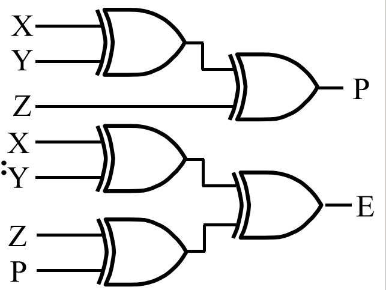
- 异或搭建：
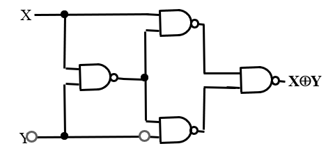
同或与偶函数
多变量同或被称为偶函数
观察多变量同或与异或的卡诺图，我们会发现它们是天然优化的，即不可优化的
The 3-State Buffer
EN为0时，不管输入什么，输出都是高阻态（开路，没有连接）
- For the symbol and truth table, IN is the data input, and EN, the control input. For EN = 0, regardless of the value on IN (denoted by X), the output value is Hi-Z. For EN = 1, the output value follows the input value.
- 两个三态门输出相连时：当两边EN不同时, 输出为EN为1 的输出值; 当两边EN都是0时输出⾼阻, 当两边EN都是1时, 不被允许.
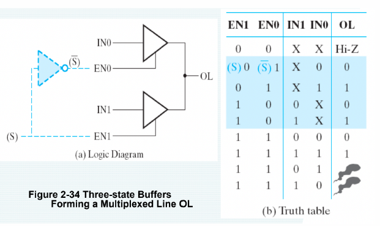
- 至少有一个buffer输出为高阻态，否则会导致high currents，破坏电路。因此只有以下五种输入允许。
对n个三态门，至少n-1个输出应为高阻态，此时有效输入一共有$2n+1$种
3-State Logic Circuit
-
Data Selection Function: If s = 0, OL = IN0, else OL = IN1
-
Performing data selection with 3-state buffers:
-
Since EN0 = S and EN1 = S, one of the two buffer outputs is always Hi-Z plus the last row of the table never occurs.
Transmission Gates
用来连接和断开电路中两点的门
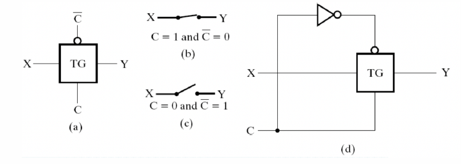

门传输延迟
- $t_{pd},t_{PHL},t_{PLH}$
- 惯性延迟：当输入使得输出在低于拒绝时间的间隔内发生两次变化，那么输出将不发生变化
- 门有求反操作时，HL输入电压变化导致输出产生LH变化，不求反时输出也为HL变化
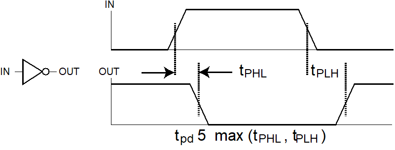
Chapter 3 Combinational Logic Design
Part 1 Implementation Technology and Logic Design
分层设计
- 原子模块(Primitive Block)：与门、或非、非门等等
- 分层设计：模块可重用性非常重要。先决条件：电路是规整(regularity)的
- 分层设计即将复杂问题模块化为若干层次，之后逐个解决
- 分为自顶向下和自底向上
-
前者从需求开始，后者从现有模块开始
-
出现在设计中的模块被称为这个模块的一个实例（instance），将它应用称为实例化（instantiation）
集成电路
又叫做芯片，分为以下等级
- SSI (small-scale integrated) 不到10个gate
- MSI(medium-$\cdots$) 10-100个gates
- LSI(large$\cdots$)成百上千个gates
- VLSI(very large) 成千上亿个gates
技术参数
| Name | Description |
|---|---|
| Fan-in | 一个门可用的输入 |
| Fan-out | 一个栅极输出驱动的标准负载数量 |
| Logic Levels | 被认为是高低电平的输入输出电压范围 |
| Noise Margin | 对外界噪声的容忍能力(具体来说是不会导致行为异变的最大噪声压值) |
| Cost for a gate | 继承电路的门成本 |
| Propagation Delay | 信号改变后从输入到输出所需的变化时间 |
| Power Dissipation | 电源输出能耗和门的能耗 |
- 扇入扇出：扇入描述了一个门能够接受的最多输入量，如一个四输入与非门的扇入就是 4；而扇出描述的则是一个门的输出(栅极输出)在不降低工作性能的情况下能够负载多少门，例如一个非门的输出能够同时负载 4 个非门并且都能正常工作，则其扇出为 4，其也能通过标准负载来定义。
-
所谓的标准负载，是衡量“负载”的一个“单位砝码”。其大小等于一个非门(逆变器)贡献的负载压力。
-
转换时间：转换时间分为$t_{LH}$（rise time）和$t_{HL}$（fall time）两个部分
- rise time 等于栅极输出从 $V_{CC}$ 的 10% 升高到 90% 所需要的时间；
- fall time 等于栅极输出从 $V_{CC}$的 90% 降低到 10% 所需要的时间；

- 随着负载增加，转换时间也会增加（给电容充电的时间增加），而扇出定义中提到的“最大负载”，就是指它的转换时间不超过它预定的最大转换时间。

- 从左到右表示负载不断增加时，rise time 的变化趋势。
- 实际上，类似的，超出扇入后，门对输入的反应就太慢了。
工艺映射
形式上： 积之和形式使用与非门，和之积形式使用或非门
NAND Mapping Algorithm 与非门成本更低，延迟更低
-
Replace ANDs and ORs:
-
消除所有反相器对
-
Repeat the following pair of actions until there is at most one inverter between :
-
A circuit input or driving NAND gate output, and-
-
The attached NAND gate inputs.
NOR Mapping Algorithm
Similar to the NAND,first Replace ANDs and ORs
EN 使能
EN为0输出始终为0，EN为1时为对应表达式值
Part 2 Combinational Logic
Decoding 译码
- Decoding - the conversion of an n-bit input code to an m-bit output code with$n\leqslant m\leqslant2^n$ such that each valid code word produces a unique output code
- Circuits that perform decoding are called decoders
- Here, functional blocks for decoding are called n-to-m line decoders, where $m\leqslant2^n$, and generate $2^n$ (or fewer) minterms for the n input variables
3-8 译码器
设计n输入译码器，不断二分，除不尽就剩下一个单独的，如上图3除2余1，因此我们使用1个4-2译码器和一个1-2-Line Decoder
通过译码器和OR可以组成任何组合逻辑电路
Decoder with Enable
由于2-4译码器只有一个输出为1，只有该门可以输出内容，因此可以将$A_1,A_0$组成的译码器当成EN，EN当成输入信号
带使能输入的译码器又被称为多路分配器
基于译码器的组合电路
当F最小项个数超过$\overline{F}$最小项个数，函数取反可以用更少最小项表示
BCD-to-Segment Decoder
- 共阳极与共阴极接法：
Encoding
-
Encoding - the opposite of decoding - the conversion of an m-bit input code to a $n$-bit output code with $n < m< 2^n$ such that each valid code word produces a unique output code
-
An encoder has $2^n$ (or fewer) input lines and $n$ output lines which generate the binary code corresponding to the input values
-
传统编码器问题：如以下输出方程式对应编码器，若$D_6,D_7$同时为1，不能判断是$A_2$还是$A_1$，即有不确定性
- 优先编码器（Priority Encoder）
位数越高优先级越高。增加一个单独输出V表示至少有一个输入为0以与$D_0=1$区分
- One encoder that can accept all possible combinations of input values and produce a meaningful result is a priority encoder.
- Among the 1s that appear, it selects the most significant input position (or the least significant input position) containing a 1 and responds with the corresponding binary code for that position.
- example:
- Priority encoder with 5 inputs (D4, D3, D2, D1, D0) - highest priority to most significant 1 present - Code outputs A2, A1, A0 and V where V indicates at least one 1 present.
- Xs in input part of table represent 0 or 1; thus table entries correspond to product terms instead of minterms. The column on the left shows that all 32 minterms are present in the product terms in the table
- Xs 在输出列表示无关情况不同
Selecting
- Selecting of data or information is a critical function in digital systems and computers
- Logic circuits that perform selecting are called multiplexers
- Selecting can also be done by three-state logic or transmission gates
Multiplexer 多路复用器 MUX
- A multiplexer selects information from an input line and directs the information to an output line
- typical multiplexer has n control inputs ($S_{n-1}, … S_0$) called selection inputs, $2^n$ information inputs ($I_{2^n - 1}, … I_0$), and one output $Y$
- A multiplexer can be designed to have m information inputs with $m < 2^n$ as well as n selection inputs
2-to-1-Line Multiplexer
- The single selection variable S has two values:
- S = 0 selects input $I_0$
-
S = 1 selects input $I_1$
-
The equation:$Y =\overline{S}I_0 + SI_1$
-
The circuit:
Multiplexer Width Expansion(选择多位)
example:4-to-1-line quad multiplexer
Other Selection Implementations
- Three-state logic in place of AND-OR。 Gate input cost = 18
- Distributing the decoding across the three-state drivers（分层选择） Gate input cost = 14
- 基于传输门的
Combinational Logic Implementation- Multiplexer Approach 1
查找表
Combinational Logic Implementation - Multiplexer Approach 2
Part 3 Arithmetic functions
Function Block
Half-Adder
两输入两输出
- $S$为$X\oplus Y,$$C$为$XY$
- 常见两种电路实现
Full-Adder
全加器即考虑上一位的进位，即$Z$or$C_i$
S=$\overline{C_i}(A\oplus B)+C_i(\overline{A\oplus B})$
The term $X\cdot Y$ is carry generate,$X\oplus Y$ is carry propagate

- Ripple-Carry Binary Adder:需要延时 行波进位加法器
- Group Carry Lookahead Logic 超前进位加法器
每次使用上一块的进位结果，每一次进位结果延迟为3
Unsigned Subtraction
Complements 补码
- Diminished Radix Complement of N: defined as $(r^n-1)-N$ ,known as 反码 $1's$ complement
- Radix Complement: defined as $r^n-N$ $2's$ complement
- 补码：对n位二进制数，相当于第一位$a_{n-1}$代表$-2^{n-1}$,后续每位都代表$2^k$
即M-N时，减数N先求补码$2^n-N$，然后$M+(2^n-N)$,若产生进位1，说明够减，对应值即为答案；若进位为0，说明不够减，则对结果取补码并加负号
有符号减法
- 设加法为0，减法为1，正数第一位0，负数第一位1，那么对减数第一位，符号，被减数第一位构成的序列，若有偶数个0，在没有溢出情况下则可以转化为同号相加
- 若被加数与被减数为负，则取对应补码（不改变符号位），之后若是加法则正常进行，减法则类似地对减数取补
S=1为减法器，S=0为加法器
溢出
同号相加、异号相减时可能会出现溢出
- 判断溢出：$V=C_n\oplus C_{n-1}$,即$C_n$与$C_{n-1}$符号一致则不溢出，否则溢出
两个正数相加，$C_n$一定是0，溢出只可能是$C_{n-1}$为1
两个负数相加，$C_n$一定是1，若不溢出$C_{n-1}$需要为1
-
无符号数溢出：两个首位都是1
-
有符号数：同号时有可能溢出
常数除法、乘法
对于2的幂次可以通过移位得到结果，对于非2幂次可以常数加法和2的幂次乘除相结合得到结果。
如$3x=2^1x+2^0x$,即$x[31:0]={x[30:0],1'b0}+x[31:0]$.
压缩、递增、递减
- 压缩：针对特定应用时简化已有模块，如递增递减等
零填充与符号扩展
- 增加输入位数：在高位添加或在低位添加，前者适用于加减，后者适用于低精度乘法